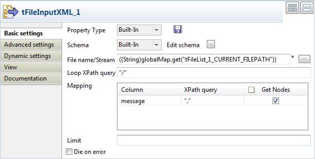

|
Component family |
Internet | |
|
Function |
Fetches a message from a queue on a Message-Oriented middle ware system and passes it on to the next component. | |
|
Purpose |
tMomInput makes it possible to set up asynchronous communications via a MOM server. | |
|
Basic settings |
Use existing connection |
Select this check box and in the Component List click the relevant connection component to reuse the connection details you already defined. NoteWhen a Job contains the parent Job and the child Job, Component list presents only the connection components in the same Job level. |
|
Keep listening |
Select this check box to keep the MOM server listening for and fetching new messages. -For JBoss Messaging server, with this check box selected, the Sleeping time (in sec) field will appear. -For Active MQ server, with this check box selected, the Sleeping time (in sec) field will disappear. | |
|
|
Sleeping time (in sec) |
Set the frequency by typing in numbers. (Available when ActiveMQ or JBoss Messaging is selected in the MQ Server list.) |
|
|
MQ Server |
Select the MOM server to be used from the list. According to the server selected, the parameters required differ slightly. |
|
|
Host/Port |
Fill in the Host name or IP address of the MOM server and Port. |
|
|
Username |
Connection login to the server you select in the MQ Server list. |
|
|
Password |
Connection password to the server you select in the MQ Server list. |
|
|
Message From |
Type in the message source, exactly as expected by the server; this must include the type and name of the source. e.g.: queue/A or topic/testtopic Note that the field is case-sensitive. (Available when ActiveMQ or JBoss Messaging is selected in the MQ Server list.) |
|
|
Message Type |
Select the message type, either: Topic or Queue. (Available when ActiveMQ or JBoss Messaging is selected in the MQ Server list.) |
|
|
Message Body Type |
Select the message body type, either: Text , Bytes or Map |
|
|
Schema and Edit Schema |
A schema is a row description, i.e., it defines the number of fields that will be processed and passed on to the next component. In the context of tMomInput usage, the schema is comprised of two columns: From and Message, and the column names are read only. |
|
Websphere MQ |
Channel |
Fill this field with the name of the channel through which the data connection is established. The default value is DC.SVRCONN. |
|
|
Queue Manager |
A system program that provides a logical container for the message queue and is responsible for transferring data to other queue managers via message channels. Fill this field with the name of the queue manager to which the data connection is made. |
|
|
Message Queue |
A queue from which message queueing applications can put messages on, and get messages. Fill this field with the name of the message queue. |
|
|
Is using message id to fetch |
Select this check box to fetch messages according to their IDs. |
|
|
Commit (delete message after reading from the queue) |
Select this check box to force a commit after reading each message from the queue. |
| Backout removed messages |
Select this check box to indicate to the queue manager that all the messages read from the server will not be deleted when the connection to server is cut off. NoteThis check box and the Browse message check box in the Advanced settings view enable you to read messages non-destructively from the queue. It is visible only when the MQ server is WebSphere MQ with the Keep listening check box cleared. For further information, see https://publib.boulder.ibm.com/iseries/v5r2/ic2924/books/csqzaw07.pdf . | |
| ActiveMQ |
Receive number of messages |
Select this check box to set the number of messages that you will receive on the console. WarningWhen you want to limit the number of messages to receive, the time limit becomes inactive and the Keep listening/Sleeping time (in sec) fields disappear. |
|
Failover |
Select this check box to show the server address table. In that table, you can define multiple MQ servers for failover. | |
| Advanced settings | Acknowledgement Mode |
Select an acknowledgement mode from the list to indicate that the client will acknowledge any messages it receives: Auto Acknowledge: With this acknowledgement mode, the client automatically acknowledges a message when it has either successfully returned from a call to receive,or the message listener it has called to process the message successfully returns. Client Acknowledge: With this acknowledgement mode, the client acknowledges a message by calling a message’s acknowledge method. Dups OK Acknowledge: This acknowledgement mode instructs the session to lazily acknowledge the delivery of messages. For further information about the usage of Jms headers, see https://publib.boulder.ibm.com/iseries/v5r2/ic2924/books/csqzaw07.pdf. NoteIf the check box Set Transacted is selected in the Advanced settings view of tMomOutput, Acknowledgement Mode will be ignored. This check box is enabled when the MQ server is ActiveMQ or JBoss Messaging. |
| Get Jms Header |
Select this check box to receive the Jms headers through the mapping from Jms fields onto MQ Series fields. When this checkbox is checked, you can specify the Jms header and the corresponding reference column name in the line(s) you added by clicking the plus button in the Parameters table. For further information about the usage of Jms headers, see https://publib.boulder.ibm.com/iseries/v5r2/ic2924/books/csqzaw07.pdf. NoteThis check box is enabled when the MQ server is ActiveMQ or JBoss Messaging. | |
| Get Jms Properties |
Select this check box to receive the Jms properties mapped to MQMD fields. When this checkbox is checked, you can specify the property name, the property type and the reference column name in the line(s) you added by clicking the plus button in the Parameters table. For further information about the usage of Jms properties, see https://publib.boulder.ibm.com/iseries/v5r2/ic2924/books/csqzaw07.pdf. (Available when ActiveMQ or JBoss Messaging is selected in the MQ Server list.) | |
| Browse message |
Select this check box to disable Commit(delete message after reading from the queue) check box and Backout removed messages check box in the Basic settings view and open the queue to browse messages. NoteThis check box and the Backout removed messages check box in the Basic settings view enable you to read messages non-destructively from the queue. Browse message check box is visible only when the MQ server is WebSphere MQ with the Backout removed messages check box cleared. For further information, see http://publib.boulder.ibm.com/infocenter/wmqv7/v7r0m0/index.jsp?topic=%2Fcom.ibm.mq.java.doc%2Fcom%2Fibm%2Fmq%2FMQC.html/. | |
| Get MQMD Fields |
Select this check box to set one or more message descriptors by adding new fields for MQMD(message queuing message descriptor) in the Parameters table: Field Name: Select one or more message descriptors from the list to retrieve header information of the message. Reference Column Name: The header and properties information of the message. For further information, see http://publib.boulder.ibm.com/infocenter/wmqv7/v7r0m0/index.jsp?topic=%2Fcom.ibm.mq.csqzak.doc%2Ffr13040_.htm/. (Available when WebSphere MQ is selected in the MQ Server list.) | |
| Include Header |
Select this check box to enable the check box for: MQRFH2 fixed Portion: Select this check box and click the plus button to add one or more lines to specify the fields and the reference column names for the fixed portion of MQRFH2 header. and the check boxes for the variable portion which contains the following three folders: MCD folder: Select this check box and click the plus button to add one or more lines to specify the fields and the reference column names for the properties that describe the format of the message. JMS folder: Select this check box and click the plus button to add one or more lines to specify the fields and the reference column names for the transportation of JMS header fields and JMSX properties. USR folder: Select this check box and click the plus button to add one or more lines to specify the fields and the reference column names for the transportation of application-defined properties associated with the message. For further information about MQRFH2 header, see https://publib.boulder.ibm.com/iseries/v5r2/ic2924/books/csqzaw07.pdf. (Available when WebSphere MQ is selected in the MQ Server list.) | |
| Set CipherSpec |
Select this check box to enable the CipherSpec list from which you can specify the CipherSpec to be used with WebSphere MQ SSL. For further information about CipherSpec, see http://publib.boulder.ibm.com/infocenter/wmqv6/v6r0/index.jsp?topic=%2Fcom.ibm.mq.csqzas.doc%2Fsy12870_.htm. (Available when WebSphere MQ is selected in the MQ Server list.) | |
|
tStatCatcher Statistics |
Select this check box to gather the Job processing metadata at a Job level as well as at each component level. | |
|
Dynamic settings |
Click the [+] button to add a row in the table and fill the Code field with a context variable to choose your MQ Server connection dynamically from multiple connections planned in your Job. The Dynamic settings table is available only when the Use an existing connection check box is selected in the Basic settings view. When a dynamic parameter is defined, the Component List box in the Basic settings view becomes unusable. For more information on Dynamic settings and context variables, see Talend Open Studio User Guide. | |
|
Usage |
This component is generally used as a start component. It must be linked to an output component. | |
|
Limitation |
Make sure the relevant ActiveMQ, JBoss Messaging or Websphere MQ server is launched. | |
This scenario is made of two Jobs. The first Job posts messages on a JBoss server queue and the second Job fetches the message from the server.
In the first Job, a string message is created using a tRowGenerator and put on a JBoss server using a tMomOutput. An intermediary tLogRow component displays the flow being passed.
Drop the three components required for the first Job from the Palette onto the design workspace and right-click to connect them using a Main row link.

Double-click on tRowGenerator to set the schema to be randomly generated.

Set just one column called message. This is the message to be put on the MOM queue.
This column is of String type and is nullable. To produce the data, use a preset function which concatenates randomly chosen ascii characters to form a 6-char string. This function is
getAsciiRandomString. (Java version). Click the Preview button to view a random sample of data generated.Set the Number of rows to be generated to 10.
Click OK to validate.
The tLogRow is only used to display a intermediary state of the data to be handled. In this example, it doesn’t require any specific configuration.
Then select the tMomOutput component.

In this case, the MQ server to be used is JBoss.
In the Host and Port fields, fill in the relevant connection information.
Select the Message type from the list. The message can be of Queue or Topic type. In this example, select the Queue type from the list.
In the To field, type in the message source information strictly respecting the syntax expected by the server. This should match the Message Type you selected, such as:
queue/A.Note
The message name is case-sensitive, therefore
queue/AandQueue/Aare different.Then click Sync Columns to pass on the schema from the preceding component. The schema being read-only, it cannot be changed. The data posted onto the MQ comes from the first schema column encountered.
Press F6 to execute the Job and view the data flow being passed on in the console, thanks to the tLogRow component.

Then set the second Job in order to fetch the queuing messages from the MOM server.
Drop the tMomInput component and a tLogRow from the Palette to the design workspace.

Select the tMomInput to set the parameters.

Select the MQ server from the list. In this example, a JBoss messaging server is used.
Set the server Host and Port information.
Set the Message From and the Message Type to match the source and type expected by the messaging server.
The Schema is read-only and is made of two columns: From and Message.
Select the Keep listening check box and set the verification frequency to 5 seconds.
Note
When using the Keep Listening option, you’ll need to kill the Job to end it.
No need to change any default setting from the tLogRow.
Save the Job and run it (when launching for the first time or if you killed it on a previous run).

The messages fetched on the server are displayed on the console.
This scenario describes a five-component Job composed of two subjobs that sends XML files from a local folder to a MOM queue, and then fetches the files from the MOM queue and displays the contents of the files on the console.
From the Palette, drop the following components one after another onto the design workspace: tFileList, tFileInputXML, tMomOutput, tMomInput, and tLogRow.
Connect tFileList to tFileInputXML using a Row > Iterate link, and connect tFileInputXML to tMomOutput using a Row > Main link to form the first subjob. This subjob will read each XML file in a given folder and send it to a MOM queue.
Connect tMomInput to tLogRow using a Row > Main link to form the second subjob. This subjob will fetch the XML files from MOM queue and display the file contents on the console.
Connect tFileInputXML to tMomInput using a Trigger > On Component Ok connection to link the two subjobs.
Double-click the tFileList component to open its Basic settings view.

In the Directory field, enter the path to the directory to read XML files from, or browse to the path by clicking the [...] button next to the field.
Select Use Glob Expressions as Filemask check box, add a new line in the Files field by clicking the [+] button, and enter
"*.xml"as the file mask so that all XML files in the directory will be used. Keep all the other settings as they are.Double-click the tFileInputXML component to open its Basic settings view.
Click the [...] button next to Edit schema to open the [Schema] dialog box.

Click the [+] button to add a column, give it a name, message in this example, and select Document from the Type list to handle XML format files. Then, click OK to close the dialog box.
In the File name/Stream field, press Ctrl+Space to access the global variable list, and select
tFileList_1.CURRENT_FILEPATHto loop on the context files’ directory.In in the Loop XPath query fields, enter
“/”to define the root as the loop node of the input files' structure; in the Mapping table, fill the XPath query column with“.”to extract all data from context node of the source files, and select the Get Nodes check box to build a Document type data flow.
Double-click the tMomOutput component to open its Basic settings view.

Select WebSphere MQ from the MQ server list, and enter the host name or IP address of the MQ server and the port number.
Enter the login authentication information in the Username and Password fields, and enter the channel name of the transmission queue in the Channel field.
As we are handling file messages, select Text Message from the Message Body Type list.
Click Sync columns to retrieve the schema structure from the preceding component.
Fill in the queue manager and message queue details in the corresponding fields, and leave the other settings as they are.
Double-click the tMomInput component to open its Basic settings view.

Set the basic parameters of the component using the same settings you have done in the tMomOutput component, including the MQ server details, login authentication details, channel, message body type, queue manager and message queue.
Click the [...] button next to Edit schema to open the [Schema] dialog box.

From the Type list for the message column, select Document to handle XML format files, and then click OK to close the dialog box.